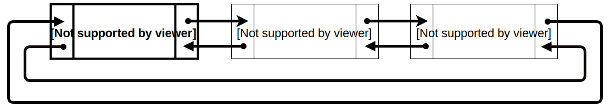

CircDLelement<E> implements a circular doubly linked list in BRIDGES and is inherited from DElement<E>

How does the CircDLelement<E> work?
CircDLelement<E> stands for Circular Doubly Linked Element, and is a container
that has two links, pointing to two other doubly linked elements. So
a CircDLelement<E> “knows” who
it’s pointing at, AND it knows who pointed at it.

In this example, calling getNext() on CircDLelement2 will return CircDLelement3.
Calling getPrev() on CircDLelement2 will return CircDLelement1. CircDLelement3 points to CircDLelement1, and CircDLelement1 points to CircDLelement3.
Notice that, since CircDLelement<E> has a getPrev() method, they can move
forwards AND backwards through the linked elements.
CircDLelement - BRIDGES Example
Create a new .java file
Imports
- We need to include these Bridges files to give access to all the classes/methods needed to interact with Bridges
- In your .java file, enter the following code snippets:
import bridges.connect.Bridges;
import bridges.base.CircDLelement;
Main Exception
- By adding a throw exception we can forgo messy try/catch blocks in our code for our Bridges calls
- In your .java file, add a throw exception to the main function so it looks like this:
public static void main(String[] args) throws Exception
Inside our Main
- First we need to create our Bridges object and initialize our Bridges Credentials
- Then we can create our CircDLelement
- Now insert the CircDLelement into the list.
- Now we pass the first element of our datastruture to Bridges
- Finally we call the visualize function
Bridges<String, String> bridge = new Bridges<String,String>(2, "YOUR_API_KEY", "YOUR_USER_ID");
Note that you must replace the above strings with your BRIDGES credentials.
CircDLelement<String> e0 = new CircDLelement<>("Hello", "");
CircDLelement<String> e1 = new CircDLelement<>("World", "");
CircDLelement<String> e2 = new CircDLelement<>("!", "");
CircDLelement tail = el0;
tail = insertFront(tail, el1);
tail = insertFront(tail, el2);
bridge.setDataStructure(e0);
bridge.visualize();
Code Summary: Your .java file should look like this
import bridges.connect.Bridges;
import bridges.base.CircDLelement;
public class HelloWorld
{
public static void main(String[] args) throws Exception
{
//create the Bridges object
Bridges<String, String> bridge = new Bridges<String,String>(2, "YOUR_API_KEY", "YOUR_USER_ID");
//create elements
CircDLelement<String> e0 = new CircDLelement<>("Hello", "");
CircDLelement<String> e1 = new CircDLelement<>("World", "");
CircDLelement<String> e2 = new CircDLelement<>("!", "");
// insert elements into list
CircDLelement<String> tail = el0;
tail = insertFront(tail, el1);
tail = insertFront(tail, el2);
//pass first element of data structure
bridge.setDataStructure(e0);
//visualize data structure
bridge.visualize();
}
}
Bridges Visualization
- Once all your code is in order, run your file.
- Assuming all your code is correct and it compiles correctly, a link to the Bridges website will be generated on the console.
- Copy/paste this link into your favorite browser to view a visualization of the data structure you just created.
- It should look something like this:
Well done! You’ve just created your first Bridges project!